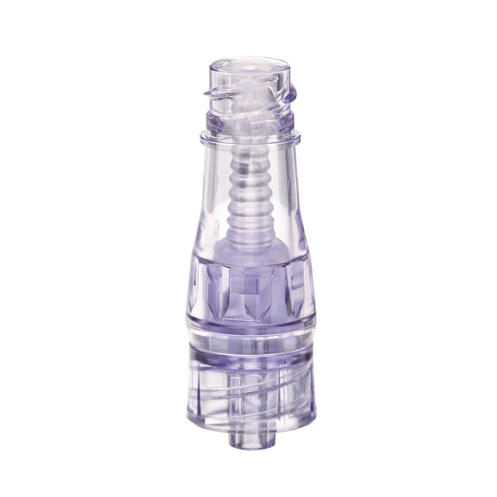

Protocolos de Seguridad y Estándares INS 2024
Disminuyen el riesgo de exposición a patógenos. Requieren desinfección activa obligatoria con alcohol isopropílico al 70% por 15-20 s.
La desinfección activa de puertos y conectores antes de cada infusión es de cumplimiento obligatorio (Estándares 32.2 y 32.3).

Irrigación Segura:
| Dispositivo | Tiempo de Cambio |
|---|---|
| DAVP Corto | Hasta 96 h |
| Equipos de infusión | Cada 96 h |
* Seguimiento estricto a las 72 h si no se ha cambiado por causa justificada.
Evaluar necesidad clínica diariamente mediante la Escala Maddox Retirar ante:
Realizar seguimiento al menos 24 horas después del retiro para valorar flebitis post-infusión e identificar complicaciones oportunamente.